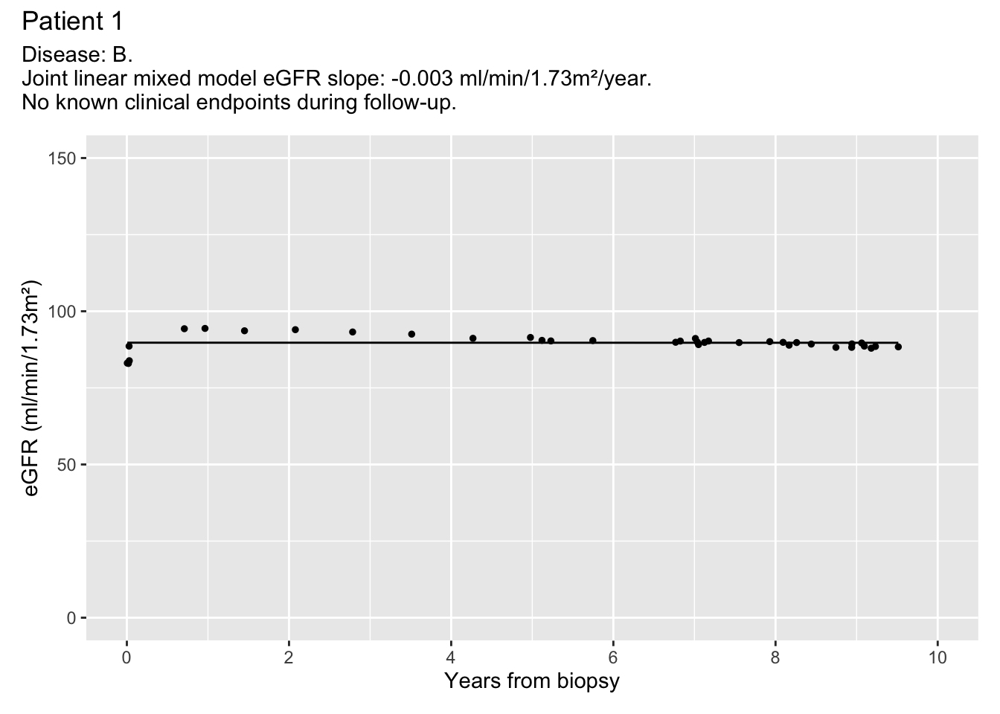

Last updated: 2023-06-17
Checks: 7 0
Knit directory: eGFRslopes/
This reproducible R Markdown analysis was created with workflowr (version 1.7.0). The Checks tab describes the reproducibility checks that were applied when the results were created. The Past versions tab lists the development history.
Great! Since the R Markdown file has been committed to the Git repository, you know the exact version of the code that produced these results.
Great job! The global environment was empty. Objects defined in the global environment can affect the analysis in your R Markdown file in unknown ways. For reproduciblity it’s best to always run the code in an empty environment.
The command set.seed(20230613) was run prior to running
the code in the R Markdown file. Setting a seed ensures that any results
that rely on randomness, e.g. subsampling or permutations, are
reproducible.
Great job! Recording the operating system, R version, and package versions is critical for reproducibility.
Nice! There were no cached chunks for this analysis, so you can be confident that you successfully produced the results during this run.
Great job! Using relative paths to the files within your workflowr project makes it easier to run your code on other machines.
Great! You are using Git for version control. Tracking code development and connecting the code version to the results is critical for reproducibility.
The results in this page were generated with repository version c96f1d1. See the Past versions tab to see a history of the changes made to the R Markdown and HTML files.
Note that you need to be careful to ensure that all relevant files for
the analysis have been committed to Git prior to generating the results
(you can use wflow_publish or
wflow_git_commit). workflowr only checks the R Markdown
file, but you know if there are other scripts or data files that it
depends on. Below is the status of the Git repository when the results
were generated:
Ignored files:
Ignored: .RData
Ignored: .Rhistory
Ignored: .Rproj.user/
Untracked files:
Untracked: analysis/04longitudinal.Rmd
Untracked: analysis/05survival.Rmd
Untracked: analysis/misc_performanceChecks.Rmd
Untracked: code/calculateEGFR.R
Untracked: code/extractSlopes.R
Untracked: code/flagAKI.R
Untracked: code/syntheticData.R
Untracked: data/simulated_longitudinal_data.csv
Untracked: data/simulated_metadata.csv
Untracked: output/eGFR_meta.csv
Untracked: output/eGFR_minimal.csv
Untracked: output/eGFR_minimal_surv.csv
Untracked: output/fitJMbayes.RDS
Untracked: output/fitted_eGFR_slopes.csv
Untracked: output/flagged_episodes.csv
Untracked: output/follow_up_report_by_patient.pdf
Untracked: output/longitudinal_data.csv
Untracked: output/pred_long.csv
Note that any generated files, e.g. HTML, png, CSS, etc., are not included in this status report because it is ok for generated content to have uncommitted changes.
These are the previous versions of the repository in which changes were
made to the R Markdown (analysis/07extractSlopes.Rmd) and
HTML (docs/07extractSlopes.html) files. If you’ve
configured a remote Git repository (see ?wflow_git_remote),
click on the hyperlinks in the table below to view the files as they
were in that past version.
| File | Version | Author | Date | Message |
|---|---|---|---|---|
| Rmd | c96f1d1 | Charlotte Boys | 2023-06-17 | Don’t display messages |
| html | 5078e86 | Charlotte Boys | 2023-06-17 | Build site. |
| Rmd | fdd1a68 | Charlotte Boys | 2023-06-17 | Add report and eGFR slope table |
Finally, we put together a report containing the eGFR measurements, flagged episodes and eGFR slopes for each patient.
Load necessary libraries:
library(tidyverse)── Attaching core tidyverse packages ──────────────────────── tidyverse 2.0.0 ──
✔ dplyr 1.1.2 ✔ readr 2.1.4
✔ forcats 1.0.0 ✔ stringr 1.5.0
✔ ggplot2 3.4.2 ✔ tibble 3.2.1
✔ lubridate 1.9.2 ✔ tidyr 1.3.0
✔ purrr 1.0.1
── Conflicts ────────────────────────────────────────── tidyverse_conflicts() ──
✖ dplyr::filter() masks stats::filter()
✖ dplyr::lag() masks stats::lag()
ℹ Use the conflicted package (<http://conflicted.r-lib.org/>) to force all conflicts to become errorsLoad support functions:
source("code/extractSlopes.R")Load data:
pred_long <- read.csv("output/pred_long.csv")
longitudinal_data <- read.csv("output/longitudinal_data.csv")
flagged_episodes <- read.csv("output/flagged_episodes.csv")The support function plot_by_patient() allows us to
generate a report plot showing the observed eGFR values, the fitted
slope, and the flagged AKI episodes.
Prepare the data:
predicted_values <- pred_long %>%
dplyr::select(-c("age_at_biopsy", "last_measurement_y",
"low_measurement", "upp_measurement", "endpoint")) %>%
dplyr::mutate(years_from_biopsy = start)
eGFR_values <- longitudinal_data %>%
dplyr::filter(type == "eGFR") %>%
dplyr::left_join(predicted_values, by = c("patient_id", "measurement", "years_from_biopsy"))
flagged_AKI <- flagged_episodes %>%
dplyr::filter(start >= 0, flag == "AKI and in-patient") %>%
dplyr::mutate(flag = "Meets AKI criteria\n& potential\nin-patient stay")View plot for Patient 1:
plot_by_patient(patient_str = 1,
longitudinal_data = eGFR_values,
flagged_episodes = flagged_AKI)
| Version | Author | Date |
|---|---|---|
| 5078e86 | Charlotte Boys | 2023-06-17 |
Create a PDF report with all eGFR slopes:
all_patients <- unique(eGFR_values$patient_id)
plots <- lapply(all_patients,
plot_by_patient,
longitudinal_data = eGFR_values,
flagged_episodes = flagged_AKI)
pdf("./output/follow_up_report_by_patient.pdf", width = 6, height = 4)
for (i in 1:length(plots)){
plot(plots[[i]])
}
dev.off()quartz_off_screen
2 Finally, the support function extract_egfr_table()
allows us to extract a table of the eGFR slope (ml/min/1.73m²/year) and
intercept (ml/min/1.73m²) according to the fitted joint mixed effects
model.
eGFR_slopes <- extract_egfr_table(patient_list = all_patients,
pred_eGFR = eGFR_values)knitr::kable(head(eGFR_slopes))| patient_id | slope | intercept |
|---|---|---|
| 1 | -0.00319569986566873 | 89.7425584667643 |
| 2 | -0.78319044258304 | 58.8697772721615 |
| 3 | -0.523898518827211 | 82.414218816593 |
| 4 | -1.81874084171771 | 66.1457608037737 |
| 5 | -1.00722995549735 | 77.2684360381736 |
| 6 | -0.119481484742004 | 52.342801282488 |
Save eGFR slopes:
write.csv(eGFR_slopes, "output/fitted_eGFR_slopes.csv", row.names = FALSE)
sessionInfo()R version 4.3.0 (2023-04-21)
Platform: aarch64-apple-darwin20 (64-bit)
Running under: macOS Monterey 12.4
Matrix products: default
BLAS: /Library/Frameworks/R.framework/Versions/4.3-arm64/Resources/lib/libRblas.0.dylib
LAPACK: /Library/Frameworks/R.framework/Versions/4.3-arm64/Resources/lib/libRlapack.dylib; LAPACK version 3.11.0
locale:
[1] en_US.UTF-8/en_US.UTF-8/en_US.UTF-8/C/en_US.UTF-8/en_US.UTF-8
time zone: Europe/Rome
tzcode source: internal
attached base packages:
[1] stats graphics grDevices utils datasets methods base
other attached packages:
[1] lubridate_1.9.2 forcats_1.0.0 stringr_1.5.0 dplyr_1.1.2
[5] purrr_1.0.1 readr_2.1.4 tidyr_1.3.0 tibble_3.2.1
[9] ggplot2_3.4.2 tidyverse_2.0.0 workflowr_1.7.0
loaded via a namespace (and not attached):
[1] sass_0.4.6 utf8_1.2.3 generics_0.1.3 stringi_1.7.12
[5] hms_1.1.3 digest_0.6.31 magrittr_2.0.3 timechange_0.2.0
[9] evaluate_0.21 grid_4.3.0 fastmap_1.1.1 rprojroot_2.0.3
[13] jsonlite_1.8.5 ggrepel_0.9.3 processx_3.8.1 whisker_0.4.1
[17] ps_1.7.5 promises_1.2.0.1 httr_1.4.6 fansi_1.0.4
[21] scales_1.2.1 jquerylib_0.1.4 cli_3.6.1 rlang_1.1.1
[25] munsell_0.5.0 withr_2.5.0 cachem_1.0.8 yaml_2.3.7
[29] tools_4.3.0 tzdb_0.4.0 colorspace_2.1-0 httpuv_1.6.11
[33] vctrs_0.6.2 R6_2.5.1 lifecycle_1.0.3 git2r_0.32.0
[37] fs_1.6.2 pkgconfig_2.0.3 callr_3.7.3 pillar_1.9.0
[41] bslib_0.4.2 later_1.3.1 gtable_0.3.3 glue_1.6.2
[45] Rcpp_1.0.10 highr_0.10 xfun_0.39 tidyselect_1.2.0
[49] rstudioapi_0.14 knitr_1.43 farver_2.1.1 patchwork_1.1.2
[53] htmltools_0.5.5 labeling_0.4.2 rmarkdown_2.22 compiler_4.3.0
[57] getPass_0.2-2